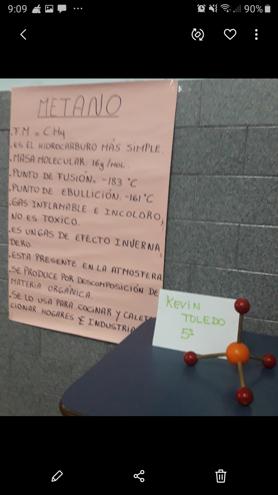

Constelaciones de cambios en Lisandro Aristimuño.
Lisandro Aristuño, multiinstrumentista y cantautor argentino mezcla influencias del rock y pop y su variante electrónica con géneros tradicionales como el folclore.
Constelaciones tiene la clara influencia del nacimiento que su hija le generó: "cuando miraba para arriba e imaginaba que podía haber algo más, desde el lado positivo, tenemos un cierto escape". Lisandro cuenta que se la pasa rodeado de música, está pensando todo el tiempo en lo que puede crear. No lo ve como un esfuerzo ya que es algo que disfruta.
La autogestión de su trabajo e independencia lo deja quedarse no solo con lo que le conviene sino también con lo que le gusta. El mismo dijo: Constelaciones tiene eso, es un disco que yo lo considero diferente al resto, en cuanto a la producción y contenido.
Creo que el álbum es bastante bueno, aunque hay ciertas cosas que no me gustaron mucho.Gente que es fan reconoce no amar sus canciones hasta escucharlas varias veces y creo que entiendo cuál es el problema de esta reflexión. En mi caso se me hicieron muy buenas instrumentales, aunque largas, tanto que se queda con poca letra. Letras que si no analizas bien son difíciles de entender o encontrarle un significado propio.
La gente lo que busca en un álbum al conocerlo es escuchar automáticamente algo que los haga pensar que no pierden el tiempo o que les guste al instante para seguir con este. Pero en Aristimuño es difícil, ya que tiene intros muy largas, frases y palabras muy separadas (perdiendo así el hilo de lo que quiere decir) y notas casi siempre altas.
Cuando no variamos notas y repetimos sonidos, cansamos al receptor o lo confundimos. Por ejemplo: mayormente las canciones tristes, suelen tener un ritmo lento, notas bajas y luego altas. Pero Lisandro repite el mismo sentimiento rítmico en todas las canciones de Constelaciones.
Amo "tu corazon". Personalmente me tocó desde la primera vez que la escuché porque pude conectar con la letra rápido y sin vueltas. Me identifiqué y me generó lo que Lisandro sintió al hacerla: "hablandome a mí mismo, al adolescente que fui".
Con un género que me gusta, pero no es de mis favoritos.
Recomendado si tenes paciencia de repetirlo hasta encontrarle algo o al menos conectar con este al nivel de que te gusten las canciones y escucharlas por gusto.
Think Tank o la transición de Blur a Gorillaz.
El álbum Think Tank fue producido entre noviembre del 2001 y noviembre del 2002. Es un álbum que representó un cambio gigante en Blur, una de las bandas inglesas más importantes de la década del 90. Así como su nombre lo dice, Think Tank es un laboratorio de ideas. Este álbum fue un laboratorio de ideas para Damon Albarn (vocalista y compositor de la banda), que luego de la salida de Graham Coxon hizo caminar a la banda por un estilo diferente del acostumbrado para la época. Blur utilizaba ritmos de la música disco y del House como base principal, mientras que este disco está lleno de sonidos eléctricos, pesados y atmosféricos lo que me hace recordar, inevitablemente, a Gorillaz, que recordemos para esta época tuvo un gran éxito y esto probablemente llevó a Damon a cambiar el aire de Blur.
Yendo ya directamente al álbum, nos encontramos con temas como Ambulance que es la primera canción. Con este tema ya podemos notar que este álbum no será más como los de antes: sonidos densos y un ambiente/atmósfera que por momentos llega a incomodar. Una canción que da un giro de creencias. Luego viene Out of time dónde a comparación de la primera canción notamos algo mucho más melódico, en mi opinión, una de las mejores canciones del álbum. Good song es otra canción con mucha melodía, propone un ambiente tranquilo y una letra un tanto poética. Más tarde retornamos a los ambientes oscuros con Brothers and Sisters una canción donde el bajo es la guía de la melodía, con una letra un poco confusa. Una canción que al escucharla por primera vez pensé que era de Gorillaz.
La música disco vuelve con Caravan. Y así sigue alternando los sonidos entre canciones melódicas y canciones más oscuras. Con esto llegamos a la décima canción Sweet Song, la mejor y más significativa canción del álbum. Damon acepta haber escrito esa canción mientras miraba fotos de Graham Coxon, a quién consideraba un hermano. En la canción encontramos versos como: Nunca quise hacerte daño, pero necesitamos tiempo, así que me alejaré lentamente.
Con esta última canción termina el álbum. Álbum gratamente diferente a lo que Blur venía haciendo, un álbum experimental, un álbum algo raro y cambiante en cuanto a lo melódico. En resumen, un álbum muy significativo para la banda y hecho para escuchar.
-->
Ricardo Gutiérrez un hombre, una escuela.
Ricardo Gutiérrez nació en Arrecifes en la provincia de Buenos Aires un 10 de noviembre de 1848 y falleció el 26 de agosto de 1896. Precursor de la medicina psicosomática y fundador del Hospital de Niños. Fue un hombre que dio una identidad única ante el cuidado del otro.
Gutiérrez era militar e ingresó al ejército de Bs. As. bajo las órdenes de Mitre. Combatió en Cepeda y Pavón mientras estudiaba medicina. También su presencia fue fundamental como médico en la guerra con el Paraguay.
Comandó los servicios de las Conchas durante las epidemias del cólera de 1867 y 1877, y la de la fiebre amarilla en 1877.
Siendo el primer pediatra argentino que llegó a perfeccionarse en el extranjero jamás dejo de lado otra de sus grandes aficiones, la escritura. Gutiérrez era poeta que escribía en medio de hospitales y enfermedades. En el diario La Nación escribía algunos pensamientos e ideas médicas que compartía con la sociedad.
Gutiérrez fue precursor de las ciencias médicas, orientado a buscar salud a los niños y poner a la medicina argentina como brújula de guía para Latinoamérica.
Nuestra escuela lleva su nombre. Orientada en ciencias sociales, la escuela Ricardo Gutiérrez enseña a sus alumnos y alumnas la búsqueda de la hospitalidad y solidaridad hacia los otros. Creando ciudadanos que contribuyan en la sociedad de la forma más amable y leal. Recordando que el crear y aprender los llevará a lugares únicos. Brindando a los demás algo de nosotros para que así todos estemos bien.
Proyectos de Química Tipos de Alcohol
Los estudiantes nos presentan los alcoholes


HISTORIA 6° AÑO

*---*
Educación Física 3ª año y 6ª año
*----*
Biología 2ª año
cita del texto
Plástica 1ª año
*----*
Comunicación 5ª año
Presentación Prezi Discriminación
la Discriminación
la Xenofobia
*---*
Construcción de la Ciudadanía 2ª año
*----*